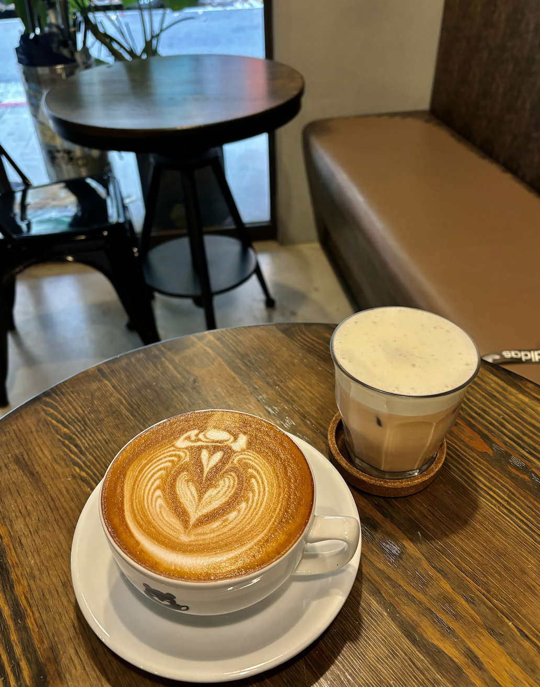
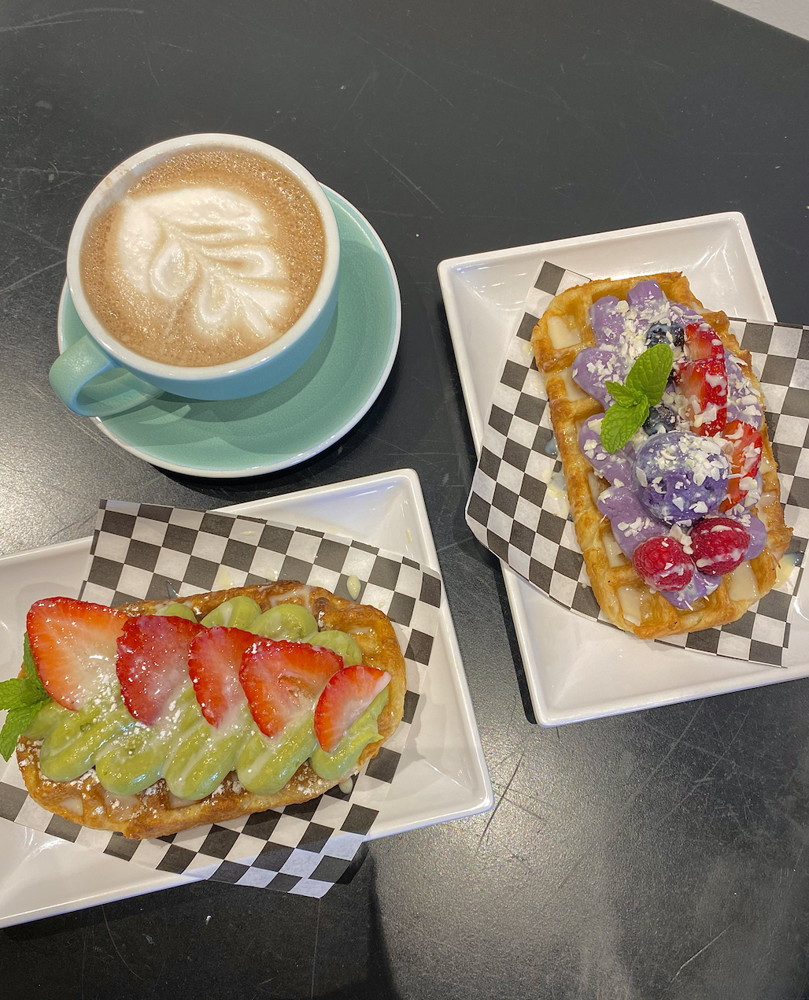
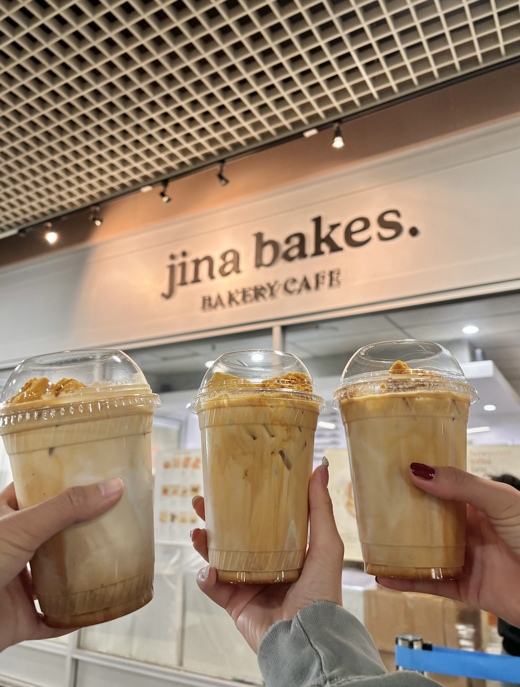
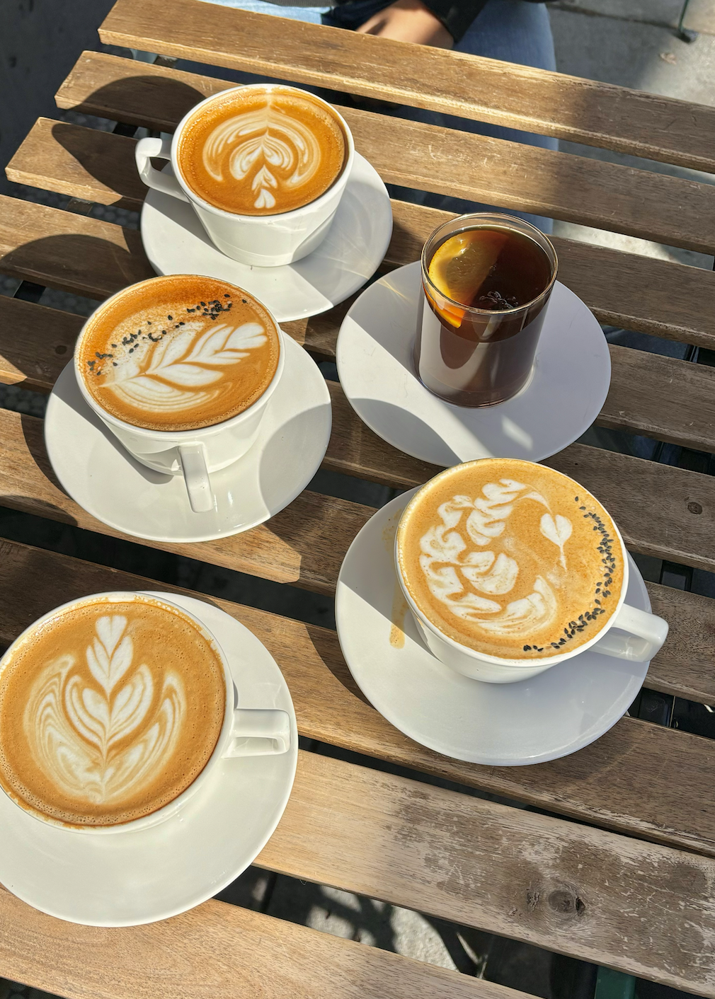
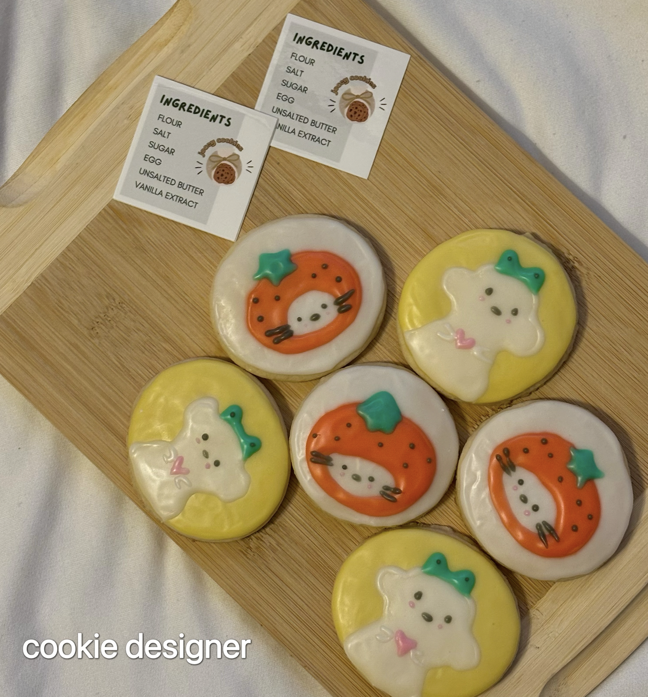
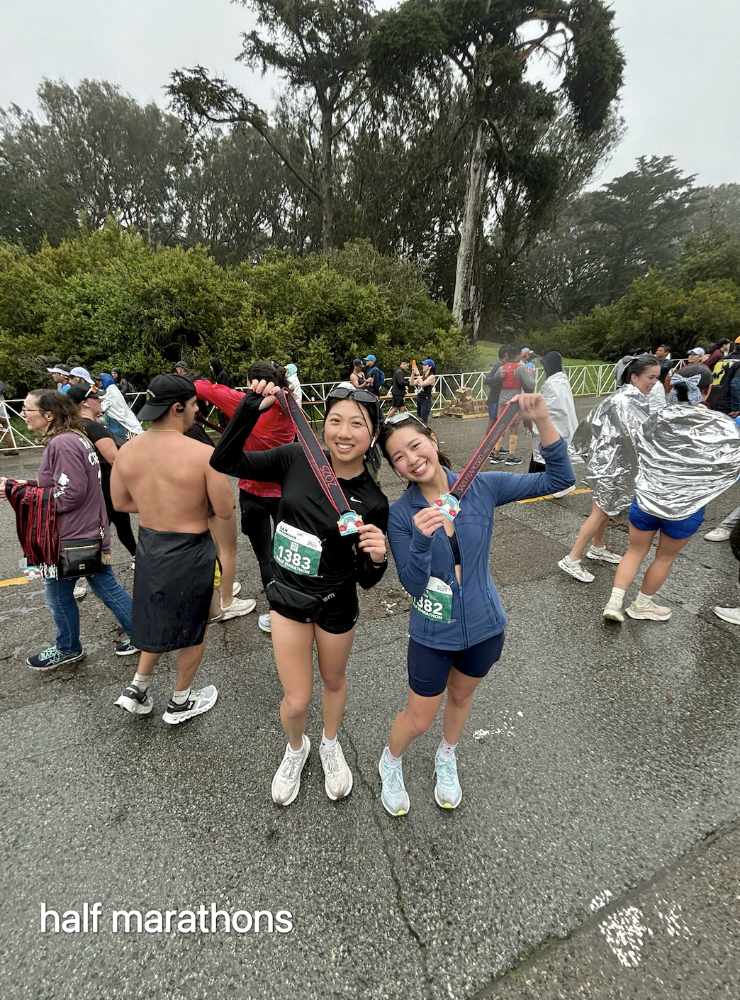
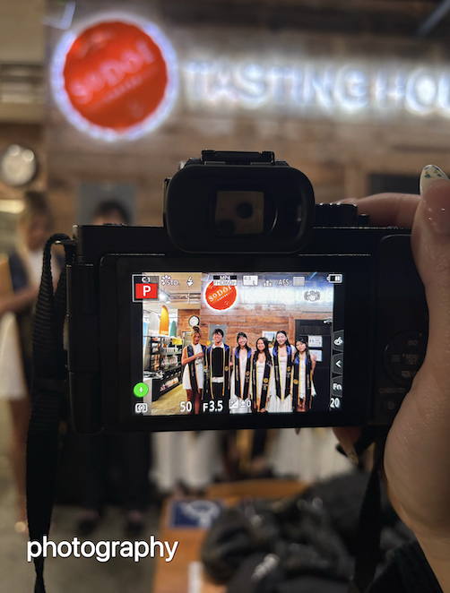
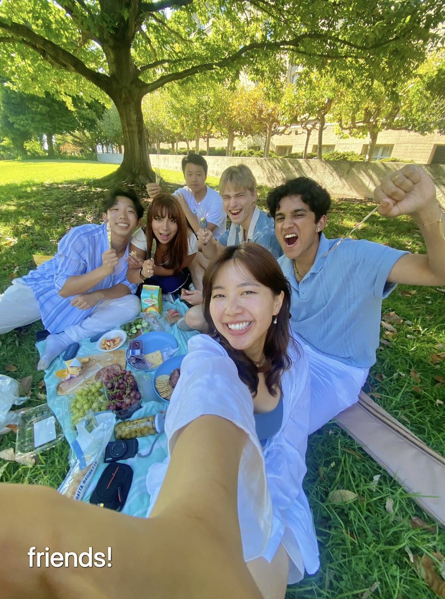
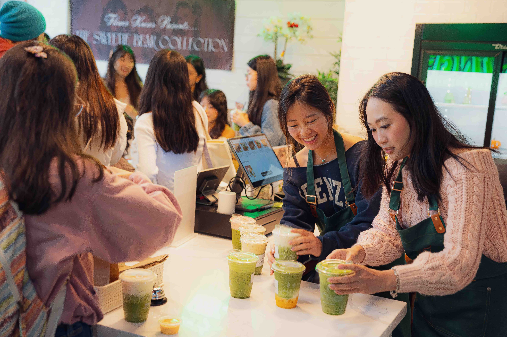

hi! i'm jocelyn liu
welcome to my cafe ☕
where i combine creative strategy with psychology and design

about me
Born and raised in the Bay Area, I'm currently a student at UC Berkeley studying cognitive science and psychology.
I love using creativity as a way to storytell, transforming ideas into experiences that connect people. Whether I am leading strategy sessions at ImagiCAL or designing digital experiences, I am passionate about weaving empathy and insight into strategies and designs that resonate.
Outside student life, I enjoy de-stressing through exploring new cafes, running half marathons, and baking with friends.








